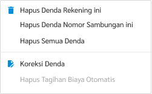

- Pada halaman daftar tagihan kolektif, klik kanan pada tagihan yang akan dikoreksi dendanya.
- Pilihlah menu koreksi denda dengan pilihan sebagai berikut:
- Pilih “Hapus Denda Rekening ini” jika ingin menghapus denda pada 1 rekening pelanggan terpilih.
- Pilih “Hapus Semua Nomor Sambungan ini” jika ingin menghapus semua denda rekening pelanggan yang dipilih.
- Pilih “Hapus Semua Denda” jika ingin menghapus denda semua rekening pelanggan kolektif.

- Berikan alasan jelas mengapa denda tersebut akan dihapus.